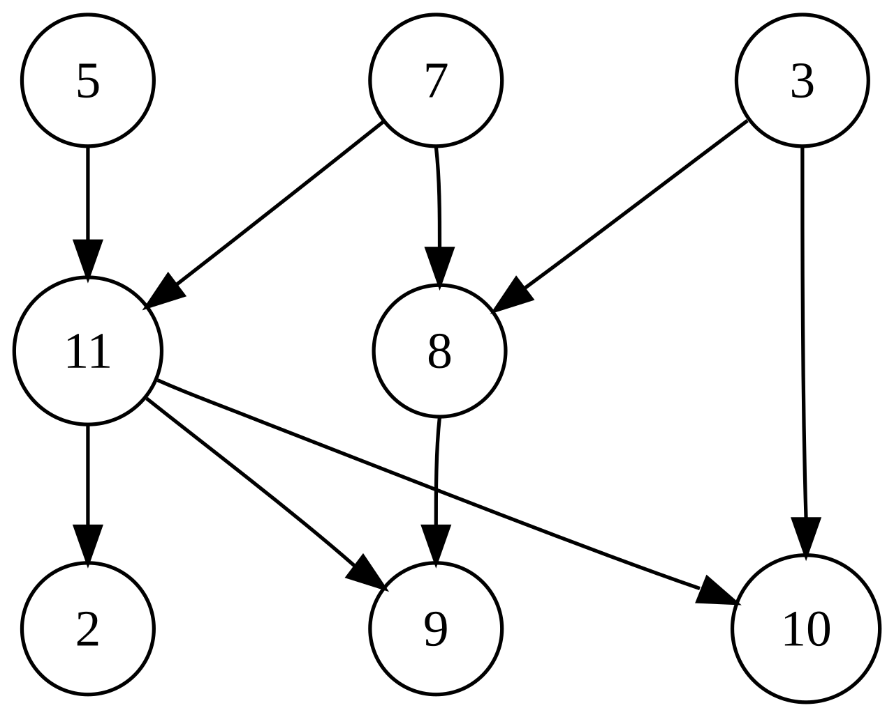

Un graf orientat este un tip de graf în care muchiile au o direcție specifică.
Aceste muchii se numesc arce și sunt reprezentate de săgeți de la un nod sursă către un nod destinație.
Definiție
Un graf orientat (sau digraf) este o pereche ordonată G = (V, A) unde:
V este o mulțime de vârfuri (noduri);
A este o mulțime de arce (muchii orientate), fiecare arc fiind un cuplu ordonat de noduri (u, v).
Reprezentare Grafică
În reprezentare grafică:
Fiecare nod este un cerc sau o bulină.
Fiecare arc este o săgeată orientată de la un nod la altul.
Tipuri de Grafuri Orientate
Graf orientat complet — există un arc de la fiecare nod către orice alt nod.
Graf parțial — doar unele perechi de noduri sunt conectate prin arce.
Graf ciclic — există cel puțin un drum închis (cicluri).
Graf aciclic (DAG) — nu există cicluri.

Aplicații Practice
Rețele de internet și telecomunicații
Planificarea proiectelor (ex: grafuri PERT)
Modele de fluxuri de lucru sau fluxuri de date
Dependențe între module software
Rețele sociale (ex: Twitter - follow vs follow-back)
Reprezentări Matematice
1. Matricea de Adiacență
O matrice pătratică unde elementul (i, j) este 1 dacă există un arc de la nodul i la nodul j și 0 altfel.
2. Lista de Adiacență
Pentru fiecare nod se păstrează lista nodurilor către care există arce.
Proprietăți importante
Gradul de intrare (in-degree): numărul de arce care intră într-un nod.
Gradul de ieșire (out-degree): numărul de arce care ies dintr-un nod.
Exemplu simplu
Considerăm graf-ul:
V = {A, B, C}
A = {(A, B), (B, C)}
Interpretare: există un arc de la A la B și un altul de la B la C.
---
Concluzie
Grafurile orientate sunt instrumente esențiale pentru modelarea relațiilor unidirecționale în multiple domenii practice și teoretice.
În continuare, puteți explora un exemplu interactiv de graf orientat pe tab-ul Aplicație!
.png)